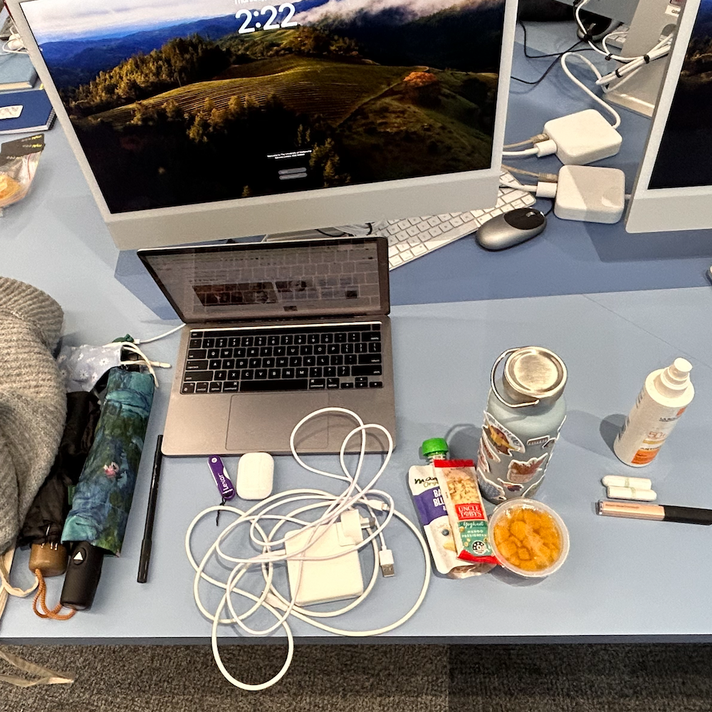
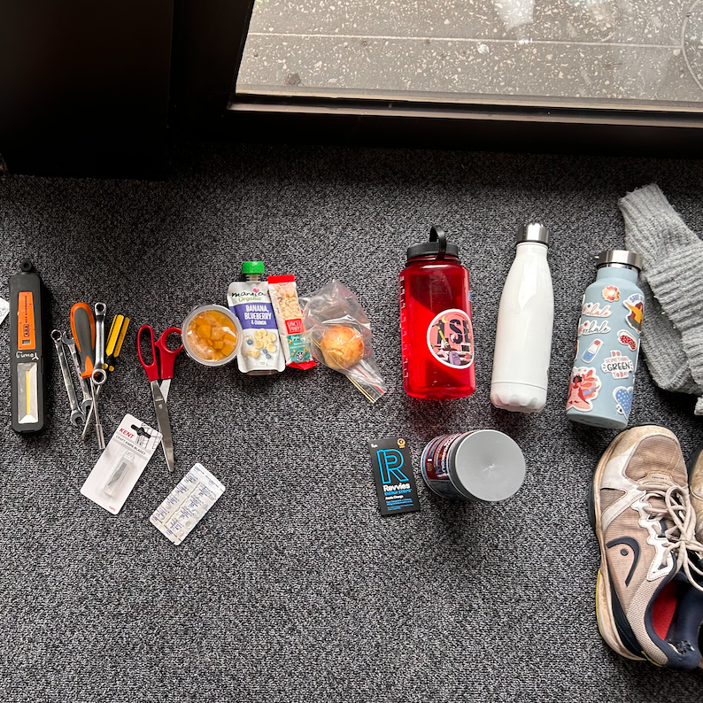
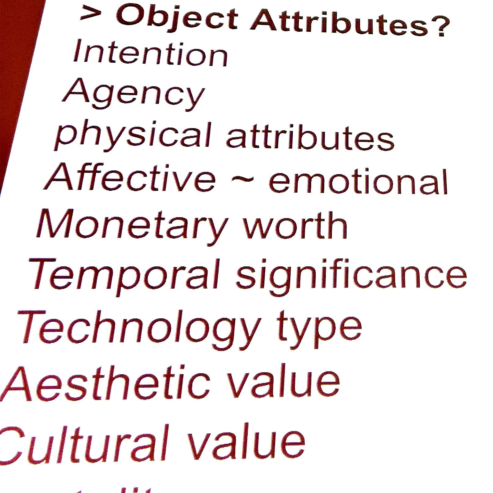

Data Collection on the Web
In class we had an extended conversation about the way our devices
collect and use data for and against us. It was interesting to realise how incredibly common it is for
online services to track your behaviour, and to think about how this data could be used against us.

Physical Forms of Data: Daily Life
We did a physical activity in class where we emptied all the contents we were carrying with us on the table, to represent a
different form of 'data'. We then categorized our belongings by different classifications. I did mine in multiple ways, including favourite items and things
I am most embarrassed to carry.

Physical Forms of Data: Zombie Apocalypse edition
After categorizing our own data, or belongings, we combined with 3 others data to create a larger data set, and then resorted this
based on a new criteria. My group chose to rank our items based on their usefulness in a Zombie Apocalypse.
Data Pie Chart
I thought it was interesting when we were told about the LATCH principles. Location, Alphabetically, Time, Category, Hierachy.
As different ways to categorise data.

Data Collection on the Web
In class we had an extended conversation about the way our devices collect and use data for and against us. It was interesting to realise how incredibly common it is for online services to track your behaviour, and to think about how this data could be used against us.
Physical Forms of Data: Daily Life
We did a physical activity in class where we emptied all the contents we were carrying with us on the table, to represent a different form of 'data'. We then categorized our belongings by different classifications. I did mine in multiple ways, including favourite items and things I am most embarrassed to carry.
Physical Forms of Data: Zombie Apocalypse edition
After categorizing our own data, or belongings, we combined with 3 others data to create a larger data set, and then resorted this based on a new criteria. My group chose to rank our items based on their usefulness in a Zombie Apocalypse.
Data Pie Chart
I thought it was interesting when we were told about the LATCH principles. Location, Alphabetically, Time, Category, Hierachy. As different ways to categorise data.